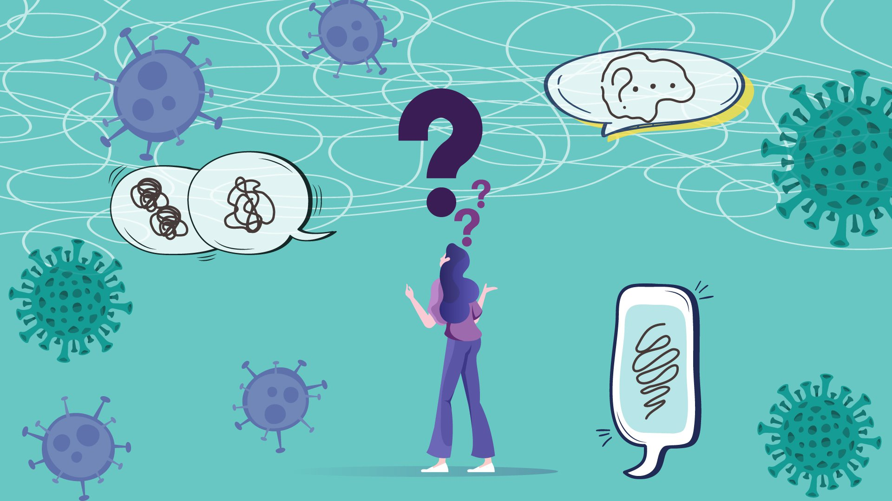

Unos niños quieren ayudar a la gente a mantenerce informados con información confiable acerca del Covid 19, sus vacunas y efectos
Un problema que mucha gente tiene es que cuando buscan información, casi nunca se ponen a buscar con profundidad, asi que siempre obtienen información muy poco precisa o falsa.
Nosostros les ayudaremos a que buscando con la misma cantidad de tiempo o menor puedan acceder a información confiable y precisa acerca del covid 19 y sus vacunas.
Esto te serviria ya que hay fuentes de información que no son para nada veridicas y asi aprenderías a cuidarte y saber que la información con la que cuentas es real
⠀
Durante la pandemia, nos llamó la atención que ante todo lo que estaba sucediendo, había una enorme desinformación, una enorme cantidad de datos no confirmados, datos no reales. Viendo que todo cambiaba... en el sector salud, en los comercios, en nuestra casa, en nuestra escuela... Decidimos no quedarnos al margen y hacer algo al respecto.
⠀
DESPUES DE EXPLORAR A PROFUNDIDAD EL TEMA, EN SINTESIS, NOS PREGUNTAMOS:
¿CUAL SERÍA LA MEJOR MANERA DE INTEGRAR LOS CONCEPTOS:
-PANDEMIA
-INFODEMIA
-TECNOLOGÍA?
⠀
⠀
Definimos el objetivo, crear el proyecto "C.I.A.", un software para obtener infomación confiable y en tiempo real sobre el covid-19 y la vacuna.
⠀
Buscar que la información fuera veraz y gratuita.
⠀
Analizar los diferentes asistentes de inteligencia artificial y seleccionamos el dispositivo de amazon "Alexa".
⠀
Asignar roles:
Investigador del equipo: Investigar en fuentes confiables para garantizar la información correcta.
Redactor: Definir las preguntas y respuestas claras y palabras claves para proceder a la programación.
Programador: Programar las preguntas y respuestas con la información proporcionada.